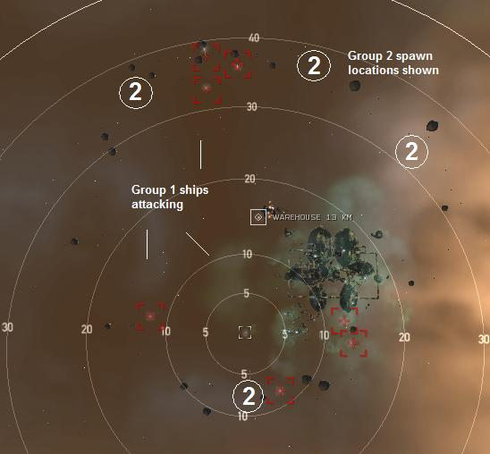
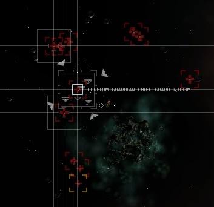

Cargo Delivery, Level 4
Last edited by NuErosion:
Encountered heavy cap nueting from multiple rats
Wed, 16 Mar 2016 15:51 UTC
Encountered heavy cap nueting from multiple rats
Wed, 16 Mar 2016 15:51 UTC
Faction: Serpentis
Mission type: Encounter
Space type: Deadspace without a gate, MWDs are working!
Damage dealt: Kin/Therm
Web/scramble: None
Extras: Heavy sensor dampening / Heavy cap nueting from multiple frigs/cruisers
Recommended damage dealing: Kin (best), Therm (secondary)
Recommended ship classes: Battleship, Command Ship, Battlecruiser, HAC, Faction Cruiser (Blitz: any fast & tanked destroyer, frigate or shuttle)
The task is to "deliver" 10 units of Quafe Ultra to your agent. You arrive 40 km away from the warehouse that contains the mission item. The mission completes the very instant you drop the item in your cargo bay. It has NOTHING to do with distance to the can or when you open the loot window. A second group can be triggered by killing all the Cruisers (Corelum Chief Infantry/Sentinel). There is no need to trigger the second group.
Single Pocket
Group 1:
1-2x Elite Frigates (Coreli Guardian Patroller/Watchman) (Sensor Dampener)1-2x Cruisers (Corelum Chief Infantry/Sentinel) (Trigger)
2x Elite Cruisers (Corelum Guardian Chief Guard/SafeGuard) (Sensor Dampener)
2x Battlecruiser (Corelatis Captain Sentry/High Captain)
2x Battleship (Core Port/Rear Admiral)

Group 2:
3-4x Elite Cruisers (Corelum Guardian Chief Defender/Protector)6x Battleships (Core Port/Rear Admiral)
1x Battleship (Dune Conal - Core Grand/Lord Admiral)

Tip
- This mission is free money and LP if you use the blitz (very easy).
- Mission is flagged complete when the Quafe Ultra is in your cargo bay and Group 1 has spawned.
Non-Blitz (for snipers)
- Fly in with a shuttle.
- Target the beacon and create a bookmark.
- Loot warehouse and warp out. Switch to sniper ship.
- Warp in to bookmark +100km.
- Kill frigate first to prevent sensor dampening.
Blitz ("free money" method)
- Method 2015 - Tested
- Spawns are no longer triggered by flying to the pickup location.
- Fly any ship to the pickup point, align to any gate/station, loot and run. The spawns are triggered on picking up the cargo.
- Recommended ship: Shuttle.
Mining
- 2,270,238 Unit Veldspar
- 60 Asteroids, average of 35k each
- Belt is a ring approx. 30km across
Bounties
6,459,228.75 ISKShips detail:
| Orbit | Max. Velocity |
Shield (hp) |
Armor (hp) |
Shield Resistances (%) | Armor Resistances (%) | DPS (hp/s) | ||||||||||
| EM | EXP | KIN | THERM | EM | EXP | KIN | THERM | EM | EXP | KIN | THERM | |||||
| 1x Coreli Guardian Patroller | 1,750m | 440m/s | 325 | 725 | 62 | 70 | 42 | 52 | 62 | 70 | 42 | 52 | - | - | 5 | 10 |
| 2x Corelum Chief Infantry | 23,000m | 360m/s | 1200 | 1500 | 48 | 58 | 28 | 38 | 48 | 58 | 28 | 38 | - | - | 15 | 27 |
| 2x Corelum Guardian Chief Guard | 5,125m | 320m/s | 1200 | 1500 | 81 | 85 | 74 | 78 | 81 | 85 | 74 | 78 | - | - | 11 | 22 |
| 2x Corelatis Captain Sentry | 6,000m | 320m/s | 1200 | 1500 | 50 | 60 | 30 | 40 | 50 | 60 | 30 | 40 | - | - | 21 | 37 |
| 7x Core Port Admiral | 37,500m | 280m/s | 4250 | 4750 | 62 | 72 | 42 | 52 | 62 | 72 | 42 | 52 | - | - | 33 | 56 |
| 3x Corelum Guardian Chief Defender | 28,750m | 320m/s | 1200 | 1500 | 85 | 90 | 72 | 79 | 85 | 90 | 72 | 79 | - | - | 18 | 27 |
| 1x Core Lord Admiral | 8,500m | 280m/s | 4750 | 5250 | 69 | 79 | 49 | 59 | 69 | 79 | 49 | 59 | - | - | 48 | 84 |
| 18 total ships | Averages/Totals: | 45,625 | 52,725 | 64.2 | 73.5 | 45.4 | 54.8 | 64.3 | 73.5 | 45.6 | 55 | - | - | 435 | 735 | |
CategoryMissions
CategoryLevel4
First step on in Drake, second - Raven (7 BS).
Group 2 have a 4 Elite Cruisers.
Group 2 dont aggro on drones.
Group 1 changed to :
1 BS, 2x Battlecruiser (Corelatis Captain Sentry), 1 Elite Frigate, 1Cruiser (Corelum Chief Infantry) -Trigger,1x Elite Cruiser (Corelum Guardian Chief Guard)
Group 2 :
4x Elite Cruisers (Corelum Guardian Chief Defender)
3x BS Core Port Admiral
2x BS Core Rear Admiral
1x BS Dune Conal
-Just had an interesting echo of Peon155's above--certainly makes completing it in a shuttle a bit more problematic. After swinging past, my pod and I bought some quafe and a new shuttle. May start planning to kill everything in the future. They seem to be asking for it.
-On the other hand, shuttle technique has worked multiple times since.
This is what I was using
Hi Slots
6 x XT Cruise launchers with wrath cruise missiles.
1 x Drone link aug
Low Slots
2 x Ballistic control system II
3 x Capacitor Flux Coil II
Mid Slots
2 x Ditrigonal thermal barrier crystalization - shield hardner
2 x non-intertial ballistic deflection field - shield hardners
1 x CL5 X-Large shield booster
1 x Shield Boost Amplifier I
Rigs
3 x Large Cap Control Circuit
was very easy. but good bounty and loot.
and i had no drone aggro in hole mission.
killing all the dampers first (see abow) helped very well!
no other ew-crap from the enemies.
this dune conal bs is very fast for its ship class!
one of the bs drops "reinforced metal scraps" its not sell-able at the market.
only in contract. never seen this befor. any one knows for what its good for?
Omni Tank: 1014 (cap stabble, lazy fittings.)
Cruise Missles: 400ps - 130km range.
Drones: 5*Hobgoblin II - 78Dps
(low damage lazy farm ship, aggro full rooms.)
Salvage Ship: Noctis
High slots: 4*Small Tractor Beam I
High slots: 4*Salvager I
Mid slots: Experimental 10MN Afterburner I
Mid slots: Experimental 10MN Microwarpdrive I
Low Slots: 3* Expanded Cargohold II
Rigs: 3* Medium Salvage Tackle I
Cargohold: 3.000m3 +-
Tractor Beam Range: 80km
-----------------------------------
Mission: Cargo Delivery (Serpentis)
Mission Time: 30 Minits
Mission LP/Bounty/Reward: 899LP - 6.8M
Salvage Time: 9 Minits
Salvage Value: 6M
4x Tachyon, Drone Link/Tractor/Salvage
MJD, MWD, 2xCR
LAR, 2xEANM, CPR, 3xHS
CCC, LEBA(t2)
Hammerheads, Light Armor, Salvagers
MTU in cargo
MWD to the warehouse, drop MTU, loot warehouse and MJD out. Pop everything smaller than a battleship. MJD back to MTU and kill all the BSs (with Salvage Drones out). As the last BS dies you'll have one or two wrecks left to loot/salvage. Scoop the drones and MTU, warp out.
I don't know how fast it is, but it doesn't take long, I'm sure this would be awesome for any marauder.
first spawn damp my sensors to hell had to close into 9km range and kill the Ewar ships. then on wave 2 kept all BS spawns at 30-50 km range and killed them easily.
I recall doing a bunch of these missions just 2 months ago and there were never any rats already spawned in the site on initial warp in. Not sure if this was an "unannounced" change or a "one off" event.
Basically nothing changed blitzing still is possible in a small fast craft.